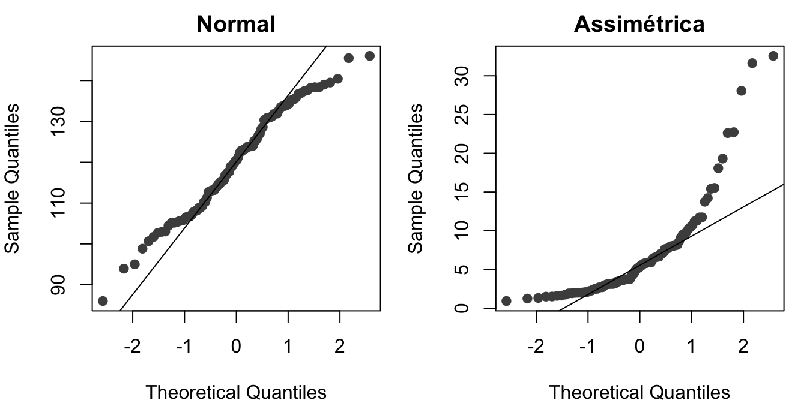
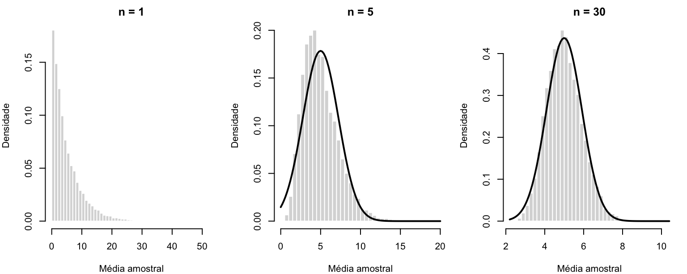
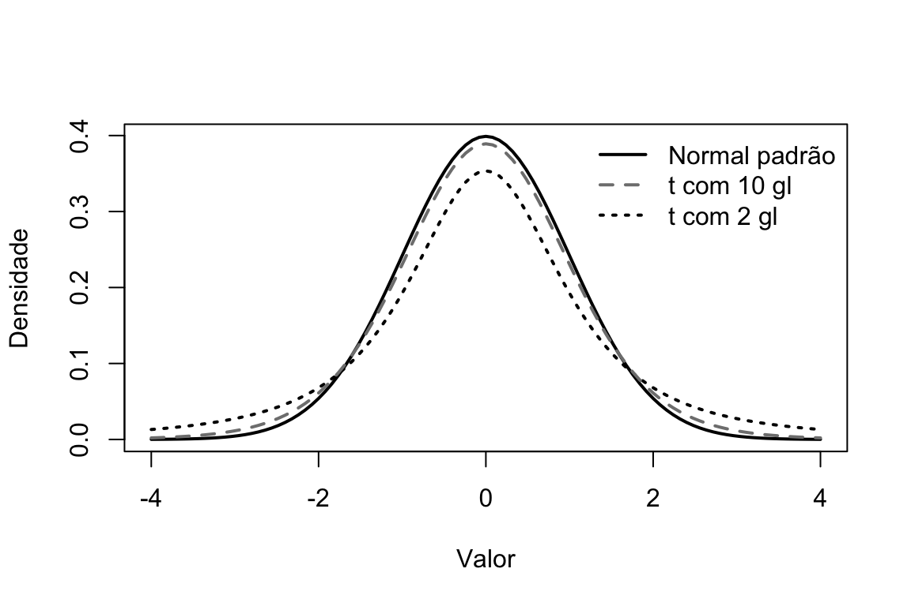
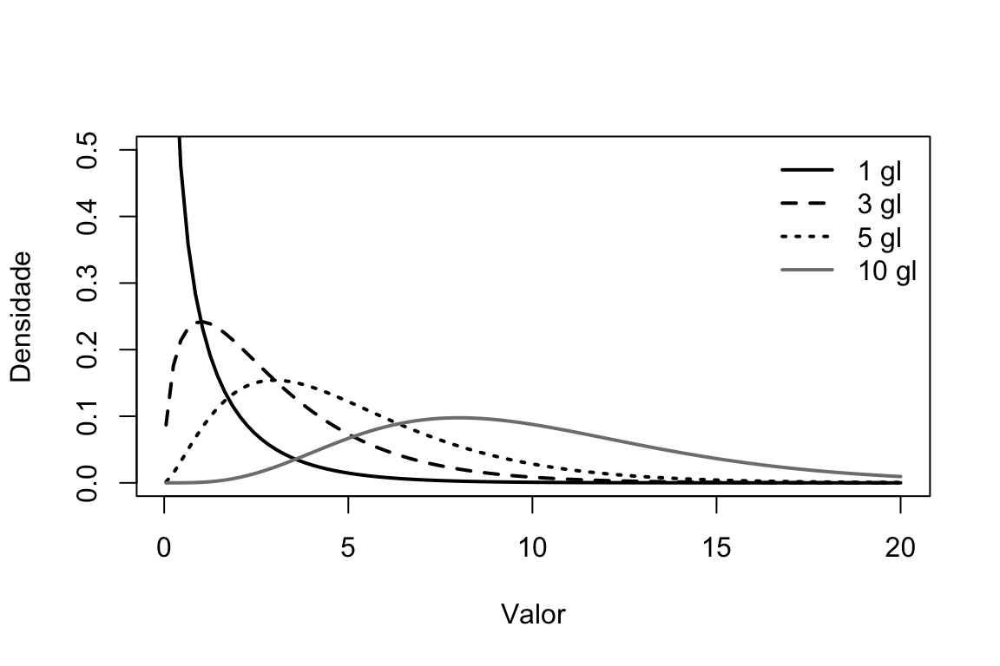
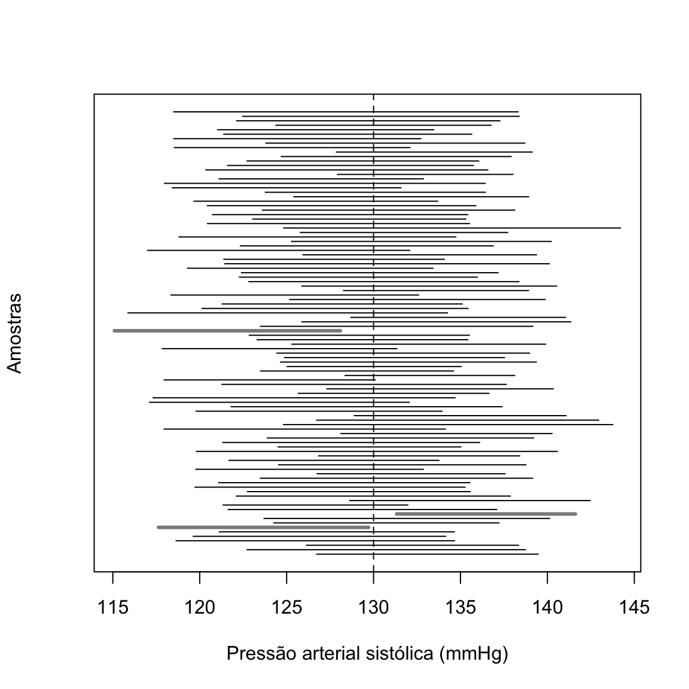

Capítulo 6 Bioestatística inferencial
Hércules Rezende Freitas, Ph.D.\(^1\)
\(^1\)Universidade do Estado do Rio de Janeiro (UERJ), Faculdade de Ciências Médicas, Departamento de Ciências Médicas Integradas, Laboratório de Informática em Saúde (LabInfoS), Cabo Frio/RJ, Brasil.
No capítulo anterior, descrevemos amostras. Mas raramente o interesse de uma pesquisa está nos 120 pacientes que foram efetivamente estudados. O que se quer saber é algo sobre todos os pacientes com aquela condição: qual é a pressão arterial média de adultos hipertensos tratados, qual é a proporção de complicações após uma cirurgia, se um medicamento reduz a mortalidade. A inferência estatística é o conjunto de métodos que permite passar da amostra observada para a população de interesse, quantificando a incerteza envolvida nessa passagem.
Essa incerteza existe porque amostras diferentes, retiradas da mesma população, produzem resultados diferentes. Se repetíssemos um estudo com outros 120 pacientes, a média da pressão arterial não seria exatamente a mesma. A inferência não elimina essa variação; ela a descreve com a linguagem da probabilidade. Por isso, este capítulo começa pelos conceitos de probabilidade, passa pelas distribuições que modelam a variação aleatória e chega às duas ferramentas centrais da inferência: os intervalos de confiança e os testes de hipóteses.
6.1 População, amostra e variabilidade amostral
A população é o conjunto de todas as unidades sobre as quais se deseja concluir algo: todos os adultos com diabetes tipo 2 no Brasil, todas as gestantes atendidas na rede pública de um município, todos os joelhos com osteoartrite grau III. Uma característica numérica da população, como a média \(\mu\) ou a proporção \(\pi\), é um parâmetro. Parâmetros são fixos, mas desconhecidos.
A amostra é o subconjunto da população que é efetivamente observado. Uma característica calculada na amostra, como \(\bar{x}\) ou \(\hat{p}\), é uma estatística. Quando usada para aproximar um parâmetro, a estatística é chamada de estimador, e o valor obtido em uma amostra específica, de estimativa.
A validade da inferência depende de como a amostra foi obtida. Os métodos deste capítulo partem da suposição de que as observações são uma amostra aleatória: cada unidade foi selecionada por um mecanismo que envolve o acaso e que não favorece sistematicamente nenhum subgrupo, e as observações são independentes entre si. Na pesquisa clínica, essa suposição raramente é satisfeita de forma literal (pacientes de um único hospital não são um sorteio de todos os pacientes do país), e a pergunta que o pesquisador deve fazer é se a amostra pode ser considerada representativa da população para a qual deseja generalizar. Nenhum método estatístico corrige uma amostra enviesada. Os erros sistemáticos de seleção e de medida são tratados no capítulo Desenhos de pesquisa; aqui nos ocupamos do erro aleatório.
O erro aleatório se manifesta como variabilidade amostral. A simulação a seguir retira cinco amostras de 30 pessoas de uma mesma população (pressão arterial sistólica com média de 130 mmHg e desvio padrão de 15 mmHg) e calcula a média de cada uma.
## [1] 124.8 128.3 129.8 132.5 128.4Nenhuma das médias é igual a 130, e elas diferem entre si, embora venham da mesma população. Toda a inferência estatística consiste em entender o comportamento dessa variação para, a partir de uma única amostra, dizer algo sobre o parâmetro.
6.2 Conceitos de probabilidade
6.2.1 Experimentos aleatórios, eventos e interpretações da probabilidade
Um experimento aleatório é um processo cujo resultado não pode ser previsto com certeza, mas cujos resultados possíveis são conhecidos: lançar um dado, sortear um paciente de um cadastro, observar se um recém-nascido terá baixo peso. O conjunto de todos os resultados possíveis é o espaço amostral (\(\Omega\)), e qualquer subconjunto dele é um evento. A probabilidade de um evento \(A\), \(P(A)\), é um número entre 0 e 1 que mede sua chance de ocorrer.
Há duas interpretações principais do que esse número significa. Na interpretação frequentista, \(P(A)\) é a proporção de vezes que \(A\) ocorreria se o experimento fosse repetido indefinidamente nas mesmas condições. Na interpretação bayesiana, \(P(A)\) representa o grau de crença em \(A\), dado o conhecimento disponível, e pode ser atribuída mesmo a eventos que não se repetem. Os métodos apresentados neste capítulo (intervalos de confiança e valores p) pertencem à tradição frequentista e só podem ser entendidos corretamente nessa interpretação. Os métodos bayesianos são mencionados no capítulo Tópicos avançados em bioestatística.
6.2.2 Regras básicas
Qualquer que seja a interpretação, as probabilidades obedecem às mesmas regras, derivadas dos axiomas formulados por Kolmogorov em 1933: (i) \(P(A) \ge 0\) para todo evento \(A\); (ii) \(P(\Omega) = 1\); (iii) se \(A\) e \(B\) são mutuamente exclusivos (não podem ocorrer juntos), \(P(A \cup B) = P(A) + P(B)\). Dessas três regras decorrem as demais.
Complemento. A probabilidade de \(A\) não ocorrer é \(P(\bar{A}) = 1 - P(A)\). Se a prevalência de hipertensão em uma população é de 25%, a probabilidade de uma pessoa sorteada não ser hipertensa é de 75%.
Adição. Para dois eventos quaisquer,
\[ P(A \cup B) = P(A) + P(B) - P(A \cap B). \]
O termo subtraído evita contar duas vezes os indivíduos que pertencem aos dois eventos. Se 25% de uma população têm hipertensão, 10% têm diabetes e 6% têm ambas, a proporção com pelo menos uma das duas doenças é \(0{,}25 + 0{,}10 - 0{,}06 = 0{,}29\).
Probabilidade condicional. A probabilidade de \(A\) dado que \(B\) ocorreu é
\[ P(A \mid B) = \frac{P(A \cap B)}{P(B)}, \qquad P(B) > 0. \]
Condicionar significa restringir o espaço amostral ao evento \(B\). No exemplo acima, a probabilidade de uma pessoa ter hipertensão, sabendo que tem diabetes, é \(0{,}06/0{,}10 = 0{,}60\), bem maior que a probabilidade não condicional de 0,25.
Multiplicação e independência. Reorganizando a definição, \(P(A \cap B) = P(A \mid B)\,P(B)\). Dois eventos são independentes quando a ocorrência de um não altera a probabilidade do outro, isto é, \(P(A \mid B) = P(A)\); nesse caso, e somente nesse caso, \(P(A \cap B) = P(A)\,P(B)\). No exemplo, hipertensão e diabetes não são independentes, pois \(0{,}25 \times 0{,}10 = 0{,}025 \neq 0{,}06\). A suposição de independência entre observações, presente em quase todos os métodos deste capítulo, é desse tipo: saber o valor de um paciente não deve alterar a distribuição do valor de outro.
Cuidado com a inversão do condicional. \(P(A \mid B)\) e \(P(B \mid A)\) são, em geral, muito diferentes. A probabilidade de um paciente ter febre dado que tem dengue é alta; a probabilidade de ter dengue dado que tem febre é muito menor. Confundir as duas é um dos erros de raciocínio mais comuns em medicina, e é exatamente o erro de interpretar um valor p como “a probabilidade de a hipótese nula ser verdadeira”, como veremos adiante.
6.2.3 Teorema de Bayes e testes diagnósticos
O teorema de Bayes permite inverter probabilidades condicionais:
\[ P(A \mid B) = \frac{P(B \mid A)\,P(A)}{P(B)} = \frac{P(B \mid A)\,P(A)}{P(B \mid A)\,P(A) + P(B \mid \bar{A})\,P(\bar{A})}. \]
A aplicação mais importante na prática clínica é a interpretação de testes diagnósticos. Seja \(D\) o evento “ter a doença” e \(T^+\) o evento “teste positivo”. As propriedades do teste são definidas condicionalmente ao estado de doença:
- sensibilidade: \(P(T^+ \mid D)\), a proporção de doentes com teste positivo;
- especificidade: \(P(T^- \mid \bar{D})\), a proporção de não doentes com teste negativo.
O clínico, porém, precisa da probabilidade inversa: dado que o teste deu positivo, qual a chance de o paciente estar doente? Essa é o valor preditivo positivo (VPP), \(P(D \mid T^+)\), e depende também da prevalência \(P(D)\).
Considere um teste com sensibilidade de 90% e especificidade de 95%, aplicado em uma população com prevalência de 2%. Pelo teorema de Bayes,
\[ \text{VPP} = \frac{0{,}90 \times 0{,}02}{0{,}90 \times 0{,}02 + 0{,}05 \times 0{,}98} = \frac{0{,}018}{0{,}018 + 0{,}049} \approx 0{,}269. \]
Apenas 27% dos positivos estão de fato doentes, apesar de o teste parecer “bom”. O mesmo resultado fica mais intuitivo com frequências naturais (Tabela 6.1). Em 10.000 pessoas, 200 têm a doença; 90% delas (180) testam positivo. Das 9.800 sem a doença, 5% (490) também testam positivo. Entre os 670 positivos, 180 estão doentes: \(180/670 \approx 26{,}9\%\).
| Com a doença | Sem a doença | Total | |
|---|---|---|---|
| Teste positivo | 180 | 490 | 670 |
| Teste negativo | 20 | 9.310 | 9.330 |
| Total | 200 | 9.800 | 10.000 |
O valor preditivo negativo, \(P(\bar{D} \mid T^-) = 9.310/9.330 \approx 99{,}8\%\), é muito alto. Esse padrão é típico de doenças raras: um teste negativo é tranquilizador, mas um positivo exige confirmação. Se o mesmo teste for aplicado a pacientes com alta suspeita clínica (prevalência de, digamos, 40%), o VPP sobe para cerca de 92%. Sensibilidade e especificidade são propriedades do teste; os valores preditivos dependem também da população em que ele é usado.
vpp <- function(sens, espec, prev) (sens * prev) / (sens * prev + (1 - espec) * (1 - prev))
vpp(0.90, 0.95, prev = c(0.02, 0.10, 0.40))## [1] 0.2686567 0.6666667 0.92307696.2.4 Variáveis aleatórias, esperança e variância
Uma variável aleatória é uma regra que associa um número a cada resultado de um experimento aleatório: o número de pacientes com infecção entre 20 operados, a pressão arterial de um adulto sorteado. Usamos letras maiúsculas (\(X\)) para a variável aleatória e minúsculas (\(x\)) para os valores que ela assume. As variáveis aleatórias são discretas ou contínuas, como as variáveis do capítulo anterior.
O comportamento de uma variável aleatória é descrito por sua distribuição de probabilidade. Duas quantidades resumem essa distribuição e correspondem, na população, à média e à variância que calculamos nas amostras:
- a esperança (ou valor esperado), \(E(X) = \mu\), é a média de longo prazo de \(X\); para uma variável discreta, \(E(X) = \sum_x x\,P(X = x)\);
- a variância, \(\text{Var}(X) = \sigma^2 = E\big[(X - \mu)^2\big]\), e o desvio padrão \(\sigma = \sqrt{\text{Var}(X)}\).
Três propriedades serão usadas repetidamente. Para constantes \(a\) e \(b\):
- \(E(a + bX) = a + b\,E(X)\) e \(\text{Var}(a + bX) = b^2\,\text{Var}(X)\);
- \(E(X + Y) = E(X) + E(Y)\), sempre;
- \(\text{Var}(X + Y) = \text{Var}(X) + \text{Var}(Y)\), se \(X\) e \(Y\) forem independentes.
Da terceira propriedade decorre um resultado central. Se \(X_1, \ldots, X_n\) são independentes, todas com variância \(\sigma^2\), então a média \(\bar{X} = \frac{1}{n}\sum X_i\) tem variância
\[ \text{Var}(\bar{X}) = \frac{1}{n^2}\sum_{i=1}^{n}\text{Var}(X_i) = \frac{1}{n^2}\cdot n\sigma^2 = \frac{\sigma^2}{n}. \]
O desvio padrão da média amostral, \(\sigma/\sqrt{n}\), é o erro padrão da média, anunciado no capítulo anterior. Ele mede quanto a média varia de amostra para amostra, e diminui com a raiz quadrada do tamanho amostral: para reduzir o erro padrão à metade, é preciso quadruplicar a amostra.
6.3 Distribuições de probabilidade
Uma distribuição de probabilidade descreve todos os valores que uma variável aleatória pode assumir e com que probabilidade. Para variáveis discretas, ela é dada pela função de probabilidade, \(P(X = x)\). Para variáveis contínuas, a probabilidade de qualquer valor exato é zero (a chance de a pressão ser exatamente 130,000… mmHg é nula), e a distribuição é dada por uma função densidade \(f(x)\): a probabilidade de \(X\) cair em um intervalo é a área sob a curva nesse intervalo. Em ambos os casos, a função de distribuição acumulada, \(F(x) = P(X \le x)\), informa a probabilidade de a variável ser menor ou igual a \(x\).
O R oferece quatro funções para cada distribuição, identificadas por um prefixo:
d(densidade ou função de probabilidade), por exemplodnorm(),dbinom();p(probabilidade acumulada, \(F(x)\)), por exemplopnorm();q(quantil, a função inversa de \(F\)), por exemploqnorm();r(geração de números aleatórios), por exemplornorm().
6.3.1 Distribuição binomial
Muitos desfechos em saúde são binários: óbito ou sobrevivência, cura ou não, presença ou ausência de uma complicação. Considere \(n\) tentativas independentes, cada uma com a mesma probabilidade \(\pi\) de “sucesso” (o termo é técnico e pode designar um evento indesejável, como uma infecção). O número \(X\) de sucessos segue uma distribuição binomial, \(X \sim \text{Bin}(n, \pi)\), com
\[ P(X = k) = \binom{n}{k}\pi^k(1 - \pi)^{n-k}, \qquad k = 0, 1, \ldots, n, \]
em que \(\binom{n}{k} = \frac{n!}{k!\,(n-k)!}\) conta de quantas maneiras os \(k\) sucessos podem se distribuir entre as \(n\) tentativas. A esperança é \(n\pi\) e a variância, \(n\pi(1 - \pi)\).
Se a taxa de infecção de sítio cirúrgico em um serviço é de 5%, qual a probabilidade de, em 20 cirurgias, ocorrerem 3 ou mais infecções?
## [1] 0.07548367A probabilidade é de cerca de 7,5%. Observar três infecções em 20 cirurgias não é, portanto, um evento extraordinário, mesmo que a taxa verdadeira seja de 5%. Esse tipo de raciocínio (“quão surpreendente seria este resultado se…”) é exatamente a lógica dos testes de hipóteses.
6.3.2 Distribuição normal
A distribuição normal (ou gaussiana) é a distribuição contínua mais importante da estatística. Sua densidade tem a forma de sino, simétrica em torno da média:
\[ f(x) = \frac{1}{\sigma\sqrt{2\pi}}\exp\left[-\frac{(x - \mu)^2}{2\sigma^2}\right], \qquad -\infty < x < \infty. \]
A distribuição fica inteiramente determinada por dois parâmetros, a média \(\mu\) e o desvio padrão \(\sigma\), e escrevemos \(X \sim N(\mu, \sigma^2)\). A média, a mediana e a moda coincidem em \(\mu\); o desvio padrão é a distância entre a média e os pontos de inflexão da curva.
Toda variável normal pode ser convertida na normal padrão, \(Z \sim N(0, 1)\), pela padronização
\[ Z = \frac{X - \mu}{\sigma}, \]
que expressa cada valor como o número de desvios padrão acima ou abaixo da média (o “escore \(z\)”). As probabilidades da normal padrão dão origem à regra empírica vista no capítulo anterior: cerca de 68,3% da área está entre \(-1\) e \(1\), 95% entre \(-1{,}96\) e \(1{,}96\) e 99,7% entre \(-3\) e \(3\).
Suponha que a pressão sistólica de adultos de uma população siga aproximadamente \(N(120, 15^2)\) mmHg. A proporção com pressão acima de 140 mmHg corresponde a \(z = (140 - 120)/15 \approx 1{,}33\), e a proporção entre 100 e 140 mmHg corresponde a \(-1{,}33 < z < 1{,}33\):
## [1] 0.09121122## [1] 0.8175776## [1] 1.959964Cerca de 9,1% da população teria pressão acima de 140 mmHg, e 81,8% estaria entre 100 e 140 mmHg. O valor 1,96, que reaparecerá muitas vezes, é o quantil que deixa 2,5% da área em cada cauda da normal padrão.
Por que a normal é tão importante? Não porque a maioria das variáveis biológicas seja normal. Muitas não são: concentrações de biomarcadores, tempos de internação e custos são, em geral, assimétricos. A importância da normal vem de outro lugar: ela descreve a distribuição de médias e de muitas outras estatísticas calculadas em amostras suficientemente grandes, como mostra o teorema a seguir.
6.3.2.1 Avaliando a normalidade dos dados
Quando um método supõe normalidade, a ferramenta mais informativa para avaliá-la é o gráfico quantil-quantil (Q-Q plot), que compara os quantis observados com os quantis esperados de uma normal. Se os dados forem aproximadamente normais, os pontos se alinham ao longo de uma reta; caudas pesadas ou assimetria aparecem como curvaturas nas extremidades (Figura 6.1).
set.seed(3)
x_normal <- rnorm(100, mean = 120, sd = 15)
x_assim <- rlnorm(100, meanlog = log(5), sdlog = 0.7)
op <- par(mfrow = c(1, 2), mar = c(4, 4, 2, 1))
qqnorm(x_normal, main = "Normal", pch = 19, col = "grey30"); qqline(x_normal)
qqnorm(x_assim, main = "Assimétrica", pch = 19, col = "grey30"); qqline(x_assim)
Figura 6.1: Gráficos quantil-quantil para uma amostra simulada de distribuição normal (esquerda) e de distribuição assimétrica à direita (direita).
Testes formais de normalidade (Shapiro–Wilk, Kolmogorov–Smirnov) existem, mas devem ser usados com cautela. Em amostras pequenas, eles têm pouco poder e raramente rejeitam a normalidade, mesmo quando ela é questionável; em amostras grandes, rejeitam desvios mínimos, que não têm consequência prática alguma, justamente quando o teorema central do limite torna a suposição menos importante. Por fim, usar um teste de normalidade para decidir entre um teste paramétrico e um não paramétrico altera as taxas de erro do procedimento como um todo (Rochon et al. 2012). A decisão deve ser tomada preferencialmente antes de ver os dados, com base no conhecimento sobre a variável e no desenho do estudo.
6.3.3 O teorema central do limite
O teorema central do limite (TCL) afirma que, se \(X_1, \ldots, X_n\) são observações independentes de uma população com média \(\mu\) e variância finita \(\sigma^2\), a distribuição da média amostral \(\bar{X}\) se aproxima de uma normal à medida que \(n\) cresce:
\[ \bar{X} \;\approx\; N\!\left(\mu,\; \frac{\sigma^2}{n}\right) \quad \text{para } n \text{ grande}, \]
qualquer que seja a forma da distribuição original. A distribuição de uma estatística ao longo de todas as amostras possíveis é chamada de distribuição amostral dessa estatística, e o TCL diz que a distribuição amostral da média é aproximadamente normal.
A Figura 6.2 ilustra o teorema com uma população fortemente assimétrica (distribuição exponencial com média 5, que poderia representar o tempo até um evento). Para cada tamanho amostral, sorteamos 10.000 amostras e construímos o histograma das 10.000 médias.
set.seed(42)
op <- par(mfrow = c(1, 3), mar = c(4, 4, 2, 1))
for (n_tcl in c(1, 5, 30)) {
medias_tcl <- replicate(10000, mean(rexp(n_tcl, rate = 1/5)))
hist(medias_tcl, breaks = 40, freq = FALSE, col = "grey85", border = "white",
main = paste("n =", n_tcl), xlab = "Média amostral", ylab = "Densidade")
if (n_tcl > 1) curve(dnorm(x, mean = 5, sd = 5 / sqrt(n_tcl)), add = TRUE, lwd = 2)
}
Figura 6.2: Teorema central do limite. Histogramas de 10.000 médias amostrais de uma população exponencial (média 5). Com n = 1, o histograma reproduz a população; à medida que n cresce, as médias se concentram em torno de 5 e sua distribuição se aproxima da normal (curva).
Três observações sobre o teorema evitam interpretações equivocadas.
- O TCL fala da distribuição da média, não dos dados. Aumentar a amostra não torna os dados “mais normais”; um histograma de 10.000 tempos de internação continuará assimétrico. O que se torna normal é a distribuição das médias de amostras repetidas.
- “Grande” depende da população. A regra popular de “\(n \ge 30\)” é uma aproximação grosseira. Para populações simétricas, amostras pequenas já bastam; para populações muito assimétricas ou com caudas pesadas, podem ser necessárias centenas de observações.
- O TCL não protege contra amostras enviesadas ou observações dependentes. Ele supõe independência e trata apenas do erro aleatório.
O TCL é o que justifica o uso de métodos baseados na normal (e na distribuição \(t\)) para fazer inferência sobre médias e proporções, mesmo quando os dados originais não são normais.
6.3.4 Distribuição t de Student
Para usar o TCL na prática, precisaríamos conhecer \(\sigma\), o desvio padrão da população, para calcular o erro padrão \(\sigma/\sqrt{n}\). Quase sempre \(\sigma\) é desconhecido e o substituímos pelo desvio padrão amostral \(s\). Essa substituição acrescenta incerteza, porque \(s\) também varia de amostra para amostra, e a estatística padronizada deixa de ter distribuição normal.
O problema foi resolvido em 1908 por William Sealy Gosset, químico da cervejaria Guinness em Dublin, que publicou sob o pseudônimo “Student” (Student 1908). Se as observações vêm de uma distribuição normal, a estatística
\[ T = \frac{\bar{X} - \mu}{s/\sqrt{n}} \]
segue uma distribuição t de Student com \(n - 1\) graus de liberdade, denotada \(t_{n-1}\). A quantidade \(s/\sqrt{n}\) é o erro padrão estimado da média.
A distribuição \(t\) é simétrica em torno de zero, como a normal padrão, mas tem caudas mais pesadas: valores extremos são mais prováveis, refletindo a incerteza adicional sobre \(\sigma\). Ela depende de um único parâmetro, os graus de liberdade (gl). Quanto maior o número de graus de liberdade, mais \(s\) se aproxima de \(\sigma\) e mais a \(t\) se aproxima da normal padrão (Figura 6.3).
curve(dnorm(x), from = -4, to = 4, lwd = 2, ylab = "Densidade", xlab = "Valor")
curve(dt(x, df = 2), add = TRUE, lwd = 2, lty = 3)
curve(dt(x, df = 10), add = TRUE, lwd = 2, lty = 2, col = "grey50")
legend("topright", bty = "n", lwd = 2, lty = c(1, 2, 3), col = c("black", "grey50", "black"),
legend = c("Normal padrão", "t com 10 gl", "t com 2 gl"))
Figura 6.3: Densidades da distribuição t de Student para 2 e 10 graus de liberdade, comparadas com a normal padrão. Com poucos graus de liberdade, as caudas são mais pesadas.
O efeito prático aparece nos quantis usados para construir intervalos de 95%. Na normal, usamos 1,96; na \(t\), o valor é maior, especialmente com amostras pequenas:
## gl quantil_t_97.5
## 1 2 4.303
## 2 5 2.571
## 3 10 2.228
## 4 30 2.042
## 5 100 1.984Com 5 graus de liberdade (amostra de 6 observações), o quantil é 2,571; com 100 graus de liberdade, já é praticamente igual ao da normal.
A distribuição \(t\) é exata quando os dados são normais. Quando não são, ela continua sendo uma boa aproximação para inferência sobre médias se a amostra for moderada ou grande (graças ao TCL) e se a assimetria não for extrema. Com amostras muito pequenas de dados claramente assimétricos, os métodos baseados na \(t\) podem ser enganosos.
6.3.5 Distribuição qui-quadrado
Se \(Z_1, \ldots, Z_k\) são variáveis normais padrão independentes, a soma de seus quadrados,
\[ Q = Z_1^2 + Z_2^2 + \cdots + Z_k^2, \]
segue uma distribuição qui-quadrado com \(k\) graus de liberdade, \(\chi^2_k\). Como é uma soma de quadrados, só assume valores positivos. Sua média é \(k\) e sua variância é \(2k\). Com poucos graus de liberdade, é fortemente assimétrica à direita; à medida que \(k\) cresce, torna-se mais simétrica (Figura 6.4).
curve(dchisq(x, df = 1), from = 0.05, to = 20, ylim = c(0, 0.5), lwd = 2,
xlab = "Valor", ylab = "Densidade")
curve(dchisq(x, df = 3), add = TRUE, lwd = 2, lty = 2)
curve(dchisq(x, df = 5), add = TRUE, lwd = 2, lty = 3)
curve(dchisq(x, df = 10), add = TRUE, lwd = 2, col = "grey50")
legend("topright", bty = "n", lwd = 2, lty = c(1, 2, 3, 1), col = c(rep("black", 3), "grey50"),
legend = paste(c(1, 3, 5, 10), "gl"))
Figura 6.4: Densidades da distribuição qui-quadrado com 1, 3, 5 e 10 graus de liberdade.
A distribuição qui-quadrado aparece em dois contextos neste livro. O primeiro é a inferência sobre variâncias: se os dados são normais, \((n-1)s^2/\sigma^2 \sim \chi^2_{n-1}\). O segundo, mais frequente na pesquisa em saúde, é o teste qui-quadrado de Pearson para tabelas de contingência, apresentado na seção de testes paramétricos. A distribuição \(F\), usada na análise de variância, é construída a partir da razão de duas qui-quadrado e é apresentada no capítulo Relações entre variáveis.
6.4 Estimação e intervalos de confiança
6.4.1 Estimação pontual
Um estimador pontual produz um único número como aproximação do parâmetro: \(\bar{x}\) para \(\mu\), \(s^2\) para \(\sigma^2\), \(\hat{p}\) para \(\pi\). Um bom estimador deve ter duas propriedades:
- ausência de viés: em média, ao longo de amostras repetidas, acerta o parâmetro. Formalmente, \(E(\hat{\theta}) = \theta\). Vimos no capítulo anterior que \(s^2\), com divisor \(n - 1\), é não viesado para \(\sigma^2\);
- precisão: varia pouco de amostra para amostra, ou seja, tem erro padrão pequeno.
Uma estimativa pontual sozinha, porém, não diz nada sobre a sua confiabilidade. Uma média de 132 mmHg calculada com 10 pacientes merece muito menos confiança do que a mesma média calculada com 10.000. Por isso, toda estimativa deve vir acompanhada de uma medida da sua incerteza, de preferência um intervalo de confiança.
6.4.2 Intervalo de confiança para a média
Pelo resultado da seção anterior, se os dados são normais (ou a amostra é grande o suficiente),
\[ P\left(-t_{n-1;\,0{,}975} \le \frac{\bar{X} - \mu}{s/\sqrt{n}} \le t_{n-1;\,0{,}975}\right) = 0{,}95, \]
em que \(t_{n-1;\,0{,}975}\) é o quantil 97,5% da distribuição \(t\) com \(n - 1\) graus de liberdade. Isolando \(\mu\) dentro das desigualdades, obtém-se o intervalo de confiança (IC) de 95% para a média:
\[\begin{equation} \bar{x} \pm t_{n-1;\,0{,}975}\,\frac{s}{\sqrt{n}}. \tag{6.1} \end{equation}\]
A quantidade \(t_{n-1;\,0{,}975}\,s/\sqrt{n}\) é a margem de erro. Para outros níveis de confiança, troca-se o quantil: para 90%, usa-se o quantil 95%; para 99%, o quantil 99,5%.
Exemplo resolvido. Em 16 pacientes hipertensos tratados, a pressão sistólica média foi de 132 mmHg, com desvio padrão de 12 mmHg. O erro padrão é \(12/\sqrt{16} = 3\) mmHg. Com 15 graus de liberdade, \(t_{15;\,0{,}975} = 2{,}131\). A margem de erro é \(2{,}131 \times 3 = 6{,}39\) mmHg, e o IC de 95% vai de \(132 - 6{,}39 = 125{,}6\) a \(132 + 6{,}39 = 138{,}4\) mmHg.
xbar <- 132; s <- 12; n_ic <- 16
ep <- s / sqrt(n_ic)
xbar + c(-1, 1) * qt(0.975, df = n_ic - 1) * ep## [1] 125.6057 138.3943Com os dados brutos, a função t.test() calcula o intervalo diretamente: t.test(x)$conf.int.
6.4.3 Como interpretar (e como não interpretar) um intervalo de confiança
A interpretação correta do IC de 95% é sutil. Na abordagem frequentista, o parâmetro \(\mu\) é fixo; o que varia de amostra para amostra é o intervalo. O “95%” é uma propriedade do procedimento: se o estudo fosse repetido muitas vezes e, em cada repetição, um intervalo fosse calculado pela Equação (6.1), cerca de 95% desses intervalos conteriam o verdadeiro valor de \(\mu\). Essa proporção de longo prazo é a cobertura do intervalo.
A Figura 6.5 mostra essa ideia com 100 amostras simuladas de uma população com \(\mu = 130\) mmHg.
set.seed(2025)
ics <- t(replicate(100, t.test(rnorm(20, mean = 130, sd = 15))$conf.int))
cobre <- ics[, 1] <= 130 & ics[, 2] >= 130
plot(NA, xlim = range(ics), ylim = c(1, 100), yaxt = "n",
xlab = "Pressão arterial sistólica (mmHg)", ylab = "Amostras")
segments(ics[, 1], 1:100, ics[, 2], 1:100,
col = ifelse(cobre, "black", "grey55"), lwd = ifelse(cobre, 1, 3))
abline(v = 130, lty = 2)
Figura 6.5: Intervalos de confiança de 95% calculados em 100 amostras simuladas (n = 20) de uma população com média 130 mmHg (linha vertical). Os intervalos em preto contêm a média verdadeira; os destacados com linha mais espessa e cinza, não.
## [1] 97Nesta simulação, 97 dos 100 intervalos contêm a média verdadeira. Em uma pesquisa real, temos apenas um desses intervalos e não sabemos se ele é um dos que acertaram. O que sabemos é que ele foi produzido por um método que acerta em 95% das vezes.
Algumas interpretações comuns são incorretas (Greenland et al. 2016):
- “Há 95% de probabilidade de \(\mu\) estar no intervalo calculado.” Depois que os dados foram coletados, o intervalo calculado contém ou não contém \(\mu\); na abordagem frequentista, não se atribui probabilidade a um parâmetro fixo. (Essa interpretação é possível na abordagem bayesiana, com intervalos de credibilidade, que exigem outro tipo de cálculo.)
- “95% dos pacientes têm valores dentro do intervalo.” O IC é sobre a média, não sobre os indivíduos. A faixa que contém a maioria dos indivíduos é muito mais larga e depende do desvio padrão, não do erro padrão.
- “Valores dentro do intervalo são igualmente plausíveis.” Valores próximos da estimativa pontual são mais compatíveis com os dados do que valores próximos dos limites.
Uma leitura útil e correta é a seguinte: o IC de 95% é o conjunto de valores do parâmetro que são razoavelmente compatíveis com os dados, sob as suposições do modelo. Isso se conecta diretamente aos testes de hipóteses, como veremos adiante.
Largura do intervalo. Pela Equação (6.1), a largura depende de três fatores: aumenta com o nível de confiança, aumenta com a variabilidade dos dados (\(s\)) e diminui com o tamanho da amostra, na proporção de \(1/\sqrt{n}\). Um intervalo estreito indica estimativa precisa; um intervalo largo indica que os dados são compatíveis com valores muito diferentes do parâmetro e, portanto, que o estudo informa pouco.
6.4.4 Intervalo de confiança para uma proporção
Para uma variável binária, o parâmetro é a proporção populacional \(\pi\), estimada por \(\hat{p} = x/n\), em que \(x\) é o número de eventos. O erro padrão estimado de \(\hat{p}\) é \(\sqrt{\hat{p}(1-\hat{p})/n}\), e o intervalo mais conhecido, chamado intervalo de Wald, é
\[ \hat{p} \pm 1{,}96\sqrt{\frac{\hat{p}(1 - \hat{p})}{n}}. \]
Apesar de estar em muitos livros, o intervalo de Wald tem desempenho ruim: sua cobertura real pode ficar muito abaixo de 95%, sobretudo quando \(n\) é pequeno ou \(\hat{p}\) está perto de 0 ou de 1, e ele pode produzir limites negativos ou maiores que 1 (Brown et al. 2001). Quando \(x = 0\), o intervalo de Wald tem largura zero, uma conclusão absurda. Recomenda-se o intervalo de Wilson (Wilson 1927; Agresti and Coull 1998), que não tem essas deficiências e é o que a função prop.test() do R calcula (com correct = FALSE, para dispensar a correção de continuidade). O intervalo exato de Clopper–Pearson, calculado por binom.test(), garante cobertura de pelo menos 95%, mas tende a ser mais largo que o necessário.
Exemplo. Em 80 pacientes operados, 12 tiveram complicação: \(\hat{p} = 12/80 = 0{,}15\).
x_ev <- 12; n_prop <- 80
p_hat <- x_ev / n_prop
p_hat + c(-1, 1) * qnorm(0.975) * sqrt(p_hat * (1 - p_hat) / n_prop) # Wald## [1] 0.07175471 0.22824529## [1] 0.08794041 0.24413229
## attr(,"conf.level")
## [1] 0.95## [1] 0.07998156 0.24736411
## attr(,"conf.level")
## [1] 0.95Os três intervalos são, respectivamente, de 7,2% a 22,8% (Wald), de 8,8% a 24,4% (Wilson) e de 8,0% a 24,7% (Clopper–Pearson). Note que o intervalo de Wilson não é simétrico em torno de 15%: como as proporções são limitadas em zero, a incerteza se estende mais para cima do que para baixo, o que é mais realista.
6.5 Testes de hipóteses
6.5.1 A lógica do teste
Um teste de hipóteses avalia se os dados são compatíveis com uma afirmação específica sobre a população. A estrutura é a de um argumento por contradição: supomos que uma hipótese seja verdadeira e verificamos se os dados observados seriam surpreendentes sob essa suposição.
Hipótese nula (\(H_0\)): a afirmação que será testada, em geral de “ausência de efeito” ou “ausência de diferença” (por exemplo, \(\mu_1 = \mu_2\), ou a diferença de risco entre dois grupos é zero).
Hipótese alternativa (\(H_1\)): o que se aceita como plausível se \(H_0\) for rejeitada (por exemplo, \(\mu_1 \neq \mu_2\)).
Estatística de teste: um número calculado a partir dos dados que mede o afastamento entre o que foi observado e o que \(H_0\) prevê, em geral na forma
\[ \text{estatística} = \frac{\text{estimativa} - \text{valor sob } H_0}{\text{erro padrão da estimativa}}. \]
Distribuição nula: a distribuição da estatística de teste se \(H_0\) for verdadeira (normal, \(t\), qui-quadrado…).
Valor p: a probabilidade, calculada supondo \(H_0\) verdadeira e todas as demais suposições do modelo corretas, de obter uma estatística de teste tão extrema quanto, ou mais extrema que, a observada.
Um valor p pequeno indica que os dados seriam incomuns se \(H_0\) (e o modelo) fossem verdadeiros; um valor p grande indica que os dados são compatíveis com \(H_0\), o que não é o mesmo que demonstrar que \(H_0\) é verdadeira.
Hipóteses bilaterais e unilaterais. Na hipótese alternativa bilateral (\(\mu_1 \neq \mu_2\)), afastamentos nas duas direções contam como evidência contra \(H_0\), e o valor p soma as duas caudas da distribuição nula. Na unilateral (\(\mu_1 > \mu_2\)), apenas uma direção conta. Testes unilaterais só se justificam quando um efeito na direção oposta seria tratado exatamente como ausência de efeito, e essa decisão precisa ser registrada antes da coleta de dados. Na pesquisa clínica, o padrão é o teste bilateral.
6.5.2 Erros, nível de significância e poder
Na abordagem de decisão proposta por Neyman e Pearson, fixa-se de antemão um nível de significância \(\alpha\) (tradicionalmente 0,05) e rejeita-se \(H_0\) quando \(p \le \alpha\). Como a decisão é tomada com dados sujeitos a erro aleatório, dois tipos de erro são possíveis (Tabela 6.2).
| Decisão | H0 verdadeira | H0 falsa |
|---|---|---|
| Rejeitar H0 | Erro tipo I (probabilidade α) | Decisão correta: poder (1 − β) |
| Não rejeitar H0 | Decisão correta (1 − α) | Erro tipo II (probabilidade β) |
- O erro tipo I é rejeitar \(H_0\) quando ela é verdadeira (um “falso positivo”). Sua probabilidade é controlada pelo pesquisador e é igual a \(\alpha\).
- O erro tipo II é não rejeitar \(H_0\) quando ela é falsa (um “falso negativo”). Sua probabilidade, \(\beta\), depende do tamanho real do efeito, da variabilidade dos dados, do tamanho da amostra e de \(\alpha\).
- O poder do teste, \(1 - \beta\), é a probabilidade de detectar um efeito de determinado tamanho, se ele existir.
O poder deve ser planejado antes do estudo, e essa é a base do cálculo de tamanho amostral. Por exemplo, para detectar com poder de 80% e \(\alpha = 0{,}05\) uma diferença de 5 mmHg entre as médias de dois grupos, quando o desvio padrão é de 12 mmHg:
##
## Two-sample t test power calculation
##
## n = 91.38944
## delta = 5
## sd = 12
## sig.level = 0.05
## power = 0.8
## alternative = two.sided
##
## NOTE: n is number in *each* groupSão necessários cerca de 92 pacientes por grupo. Um estudo com poder baixo tem alta probabilidade de não detectar efeitos reais e, quando detecta um efeito “significativo”, tende a superestimar seu tamanho.
6.5.3 O que o valor p não é
O valor p é provavelmente a quantidade mais mal interpretada da estatística aplicada. Em 2016, a American Statistical Association publicou uma declaração com seis princípios sobre o tema (Wasserstein and Lazar 2016), e Greenland e colaboradores (2016) catalogaram dezenas de interpretações equivocadas. As mais importantes são:
- O valor p não é a probabilidade de \(H_0\) ser verdadeira. Ele é calculado supondo que \(H_0\) é verdadeira; é uma probabilidade sobre os dados, dada a hipótese, e não sobre a hipótese, dados os dados. Confundir as duas é o mesmo erro de inverter o condicional discutido na seção de probabilidade.
- O valor p não mede o tamanho nem a importância de um efeito. Com uma amostra grande, uma diferença clinicamente irrelevante (1 mmHg na pressão arterial) pode produzir \(p < 0{,}001\); com uma amostra pequena, uma diferença clinicamente importante pode produzir \(p = 0{,}30\).
- \(p > 0{,}05\) não demonstra ausência de efeito. “Ausência de evidência não é evidência de ausência.” Um resultado não significativo com intervalo de confiança largo é inconclusivo, não negativo.
- O limiar de 0,05 é uma convenção. Um resultado com \(p = 0{,}049\) e outro com \(p = 0{,}051\) fornecem praticamente a mesma evidência. Relatar o valor p exato (por exemplo, \(p = 0{,}04\), e não “\(p < 0{,}05\)” ou “NS”) e não tratar o limiar como uma fronteira entre verdade e falsidade são boas práticas.
- O valor p depende de todas as suposições do modelo, não apenas de \(H_0\). Violação de independência, dados enviesados ou análises escolhidas depois de ver os dados (testar várias variáveis e relatar apenas as significativas) invalidam o valor p.
Por essas razões, a recomendação atual é relatar sempre a estimativa do efeito com seu intervalo de confiança, usando o valor p como informação complementar.
Relação entre testes e intervalos. Há uma correspondência exata entre o teste bilateral com nível \(\alpha\) e o IC de \(100(1-\alpha)\%\) construído pelo mesmo método: \(H_0\colon \mu = \mu_0\) é rejeitada a 5% se, e somente se, \(\mu_0\) estiver fora do IC de 95%. O intervalo, porém, informa mais: mostra todos os valores compatíveis com os dados, e não apenas se um valor específico foi ou não rejeitado.
Comparações múltiplas. Se forem realizados 20 testes independentes, cada um com \(\alpha = 0{,}05\), e todas as hipóteses nulas forem verdadeiras, a probabilidade de pelo menos um resultado “significativo” por acaso é \(1 - 0{,}95^{20} \approx 64\%\). Quando muitos testes são realizados, é preciso definir de antemão o desfecho principal ou ajustar os valores p (por exemplo, pelo método de Bonferroni, que compara cada valor p com \(\alpha/m\), sendo \(m\) o número de testes, ou por métodos menos conservadores, como o de Holm, disponíveis na função p.adjust()).
6.5.4 Testes paramétricos
Testes paramétricos supõem que os dados (ou as estatísticas calculadas a partir deles) seguem uma distribuição de forma conhecida, caracterizada por parâmetros, como a normal. Apresentamos a seguir os testes mais usados para comparar médias e proporções. A comparação de três ou mais médias (análise de variância) e a análise da associação entre variáveis quantitativas (correlação e regressão) são tratadas no capítulo Relações entre variáveis.
6.5.4.1 Teste t para uma amostra e para amostras pareadas
O teste t para uma amostra compara a média de uma população com um valor de referência \(\mu_0\). A estatística é
\[ t = \frac{\bar{x} - \mu_0}{s/\sqrt{n}}, \]
que, sob \(H_0\colon \mu = \mu_0\), segue a distribuição \(t_{n-1}\).
O teste t pareado se aplica quando cada observação de um grupo está naturalmente ligada a uma observação do outro: o mesmo paciente medido antes e depois de um tratamento, os dois olhos de um mesmo paciente, gêmeos. O pareamento é aproveitado calculando, para cada par, a diferença \(d_i\), e aplicando o teste t para uma amostra às diferenças, com \(H_0\colon \mu_d = 0\). Ignorar o pareamento e analisar os dados como dois grupos independentes desperdiça informação e, em geral, reduz o poder.
Exemplo resolvido. A pressão sistólica de 8 pacientes foi medida antes e depois de quatro semanas de uma intervenção (Tabela 6.3).
| Paciente | Antes | Depois | Diferença |
|---|---|---|---|
| 1 | 152 | 144 | 8 |
| 2 | 148 | 146 | 2 |
| 3 | 160 | 151 | 9 |
| 4 | 145 | 148 | -3 |
| 5 | 170 | 158 | 12 |
| 6 | 158 | 151 | 7 |
| 7 | 150 | 149 | 1 |
| 8 | 165 | 152 | 13 |
As diferenças são \(8, 2, 9, -3, 12, 7, 1, 13\). Então:
- média das diferenças: \(\bar{d} = 49/8 = 6{,}125\) mmHg;
- soma dos quadrados dos desvios: \(\sum (d_i - \bar{d})^2 = 220{,}875\); variância \(s_d^2 = 220{,}875/7 \approx 31{,}55\); desvio padrão \(s_d \approx 5{,}617\) mmHg;
- erro padrão: \(s_d/\sqrt{8} \approx 1{,}986\) mmHg;
- estatística: \(t = 6{,}125/1{,}986 \approx 3{,}08\), com 7 graus de liberdade.
O valor crítico bilateral a 5% é \(t_{7;\,0{,}975} = 2{,}365\). Como \(3{,}08 > 2{,}365\), rejeita-se \(H_0\); o valor p exato é cerca de 0,018. O IC de 95% para a redução média é \(6{,}125 \pm 2{,}365 \times 1{,}986\), isto é, de 1,4 a 10,8 mmHg.
##
## Paired t-test
##
## data: antes and depois
## t = 3.0841, df = 7, p-value = 0.01771
## alternative hypothesis: true mean difference is not equal to 0
## 95 percent confidence interval:
## 1.428856 10.821144
## sample estimates:
## mean difference
## 6.125O resultado deve ser relatado com o efeito em primeiro lugar: “a pressão sistólica diminuiu em média 6,1 mmHg (IC 95%: 1,4 a 10,8; \(p = 0{,}018\))”. O intervalo largo mostra que, com apenas 8 pacientes, os dados são compatíveis tanto com uma redução pequena, de pouca relevância clínica, quanto com uma redução importante. Lembre-se, também, de que sem um grupo controle não é possível atribuir a redução à intervenção: regressão à média, efeito placebo e a própria evolução natural poderiam explicá-la. Essa é uma questão de desenho, não de estatística.
6.5.4.2 Teste t para duas amostras independentes
Para comparar as médias de dois grupos independentes (por exemplo, tratamento e controle), a estatística é
\[ t = \frac{\bar{x}_1 - \bar{x}_2}{\text{EP}(\bar{x}_1 - \bar{x}_2)}. \]
Há duas versões, que diferem no cálculo do erro padrão:
- O teste t de Student clássico supõe que as duas populações têm a mesma variância e combina as duas variâncias amostrais em uma estimativa única, a variância combinada \(s_p^2 = \frac{(n_1 - 1)s_1^2 + (n_2 - 1)s_2^2}{n_1 + n_2 - 2}\), com \(\text{EP} = s_p\sqrt{1/n_1 + 1/n_2}\) e \(n_1 + n_2 - 2\) graus de liberdade.
- O teste t de Welch (Welch 1947) não supõe variâncias iguais: usa \(\text{EP} = \sqrt{s_1^2/n_1 + s_2^2/n_2}\) e um número aproximado (em geral não inteiro) de graus de liberdade.
Quando as variâncias são iguais, os dois testes dão resultados quase idênticos. Quando são diferentes, especialmente se os tamanhos dos grupos também forem diferentes, o teste de Student clássico pode ter taxa de erro tipo I muito distante de \(\alpha\). Por isso, recomenda-se usar o teste de Welch como padrão (Delacre et al. 2017), que é, aliás, o padrão da função t.test() do R (var.equal = FALSE). Testar a igualdade de variâncias antes, para escolher entre os dois, não é recomendado, pelas mesmas razões discutidas para os testes de normalidade.
set.seed(7)
controle <- round(rnorm(40, mean = 140, sd = 14))
tratamento <- round(rnorm(35, mean = 133, sd = 18))
t.test(tratamento, controle) # Welch (padrão)##
## Welch Two Sample t-test
##
## data: tratamento and controle
## t = -2.2955, df = 70.578, p-value = 0.02468
## alternative hypothesis: true difference in means is not equal to 0
## 95 percent confidence interval:
## -14.996364 -1.053636
## sample estimates:
## mean of x mean of y
## 135.800 143.825## [1] 0.02411136Nesse exemplo simulado, a diferença entre as médias (tratamento menos controle) foi de -8,0 mmHg, com IC de 95% de -15,0 a -1,1 mmHg e \(p =\) 0,025.
As suposições do teste t para amostras independentes são: (i) observações independentes dentro e entre os grupos; (ii) distribuição aproximadamente normal das médias amostrais, garantida pelo TCL em amostras moderadas, ou dados aproximadamente normais em amostras pequenas; (iii) no teste clássico, variâncias iguais. A primeira é a mais importante e a única que nenhum procedimento estatístico simples corrige.
6.5.4.3 Teste qui-quadrado para tabelas de contingência
Para comparar proporções entre grupos, ou avaliar a associação entre duas variáveis categóricas, os dados são organizados em uma tabela de contingência. A hipótese nula é de independência: a distribuição de uma variável é a mesma em todas as categorias da outra.
Nota sobre a classificação. Apresentamos o teste qui-quadrado entre os testes paramétricos porque ele se baseia em um modelo probabilístico explícito para as contagens (multinomial ou binomial, com probabilidades de célula como parâmetros) e em uma aproximação assintótica cuja validade depende do tamanho das frequências esperadas. Essa classificação não é unânime: muitos textos o tratam como teste não paramétrico, por não supor nenhuma forma específica de distribuição para uma variável contínua subjacente e por se aplicar a dados nominais. É o caso do manual clássico de Siegel e Castellan (1988), que inclui os testes qui-quadrado entre os métodos não paramétricos. Mais importante que o rótulo é conhecer as suposições do teste: observações independentes e frequências esperadas suficientemente grandes.
O teste qui-quadrado de Pearson compara as frequências observadas (\(O\)) em cada célula com as frequências esperadas (\(E\)) se \(H_0\) fosse verdadeira. A frequência esperada de cada célula é
\[ E = \frac{\text{total da linha} \times \text{total da coluna}}{\text{total geral}}, \]
e a estatística de teste é
\[ X^2 = \sum_{\text{células}} \frac{(O - E)^2}{E}, \]
que, sob \(H_0\) e com frequências esperadas suficientemente grandes, segue aproximadamente a distribuição \(\chi^2\) com \((r - 1)(c - 1)\) graus de liberdade, em que \(r\) e \(c\) são os números de linhas e de colunas.
Exemplo resolvido. Em um estudo, 100 pacientes foram acompanhados após uma cirurgia; 40 eram fumantes. A Tabela 6.4 mostra as frequências observadas de complicação.
| Com complicação | Sem complicação | Total | |
|---|---|---|---|
| Fumantes | 12 (E = 8) | 28 (E = 32) | 40 |
| Não fumantes | 8 (E = 12) | 52 (E = 48) | 60 |
| Total | 20 | 80 | 100 |
A frequência esperada de fumantes com complicação é \(40 \times 20/100 = 8\); as demais são obtidas da mesma forma. Então,
\[ \begin{aligned} X^2 &= \frac{(12 - 8)^2}{8} + \frac{(28 - 32)^2}{32} + \frac{(8 - 12)^2}{12} + \frac{(52 - 48)^2}{48} \\ &= 2 + 0{,}5 + 1{,}333 + 0{,}333 = 4{,}17, \end{aligned} \]
com \((2 - 1)(2 - 1) = 1\) grau de liberdade, o que corresponde a \(p \approx 0{,}041\).
tab_comp <- matrix(c(12, 28, 8, 52), nrow = 2, byrow = TRUE,
dimnames = list(Tabagismo = c("Fumante", "Não fumante"),
Complicação = c("Sim", "Não")))
chisq.test(tab_comp, correct = FALSE)##
## Pearson's Chi-squared test
##
## data: tab_comp
## X-squared = 4.1667, df = 1, p-value = 0.04123## Complicação
## Tabagismo Sim Não
## Fumante 8 32
## Não fumante 12 48Três observações práticas:
- Para tabelas 2 × 2, a função
chisq.test()aplica por padrão a correção de continuidade de Yates, que torna o teste mais conservador (aqui, \(p \approx 0{,}074\)). Há debate sobre a conveniência dessa correção; o importante é declarar qual versão foi usada. - A aproximação pela distribuição qui-quadrado é ruim quando as frequências esperadas são pequenas. A regra usual, derivada de Cochran (1954), recomenda que nenhuma frequência esperada seja menor que 1 e que no máximo 20% delas sejam menores que 5. Fora dessas condições, usa-se o teste exato de Fisher (
fisher.test()), que calcula o valor p sem recorrer à aproximação. Note que a regra se refere às frequências esperadas, não às observadas. - O teste qui-quadrado informa se há associação, não o seu tamanho. O resultado deve vir acompanhado de uma medida de efeito: no exemplo, o risco de complicação foi de \(12/40 = 30\%\) nos fumantes e de \(8/60 = 13{,}3\%\) nos não fumantes, uma diferença de risco de 16,7 pontos percentuais e um risco relativo de \(0{,}30/0{,}133 = 2{,}25\), ambos com seus intervalos de confiança. Essas medidas são discutidas no capítulo Aplicações práticas e estudos de caso.
6.5.5 Testes não paramétricos
Os testes não paramétricos fazem menos suposições sobre a forma da distribuição dos dados. Muitos deles substituem os valores observados por seus postos (ranks), isto é, por suas posições na amostra ordenada, o que os torna robustos a valores extremos e aplicáveis a variáveis ordinais. “Não paramétrico” não significa “livre de suposições”: a independência das observações continua essencial, e cada teste tem suposições próprias que determinam o que exatamente ele testa.
São indicados especialmente para variáveis ordinais (escores, escalas de Likert), para amostras pequenas com distribuição claramente não normal e para dados com valores extremos que não podem ser descartados. Em amostras grandes e dados aproximadamente simétricos, os testes paramétricos são mais poderosos e ainda fornecem estimativas de efeito diretamente interpretáveis (diferenças de médias). A perda de poder dos testes de postos em relação ao teste t, quando os dados são de fato normais, é pequena (da ordem de 5%), e o ganho pode ser grande quando as caudas são pesadas.
6.5.5.1 Teste de Wilcoxon–Mann–Whitney
O teste de Wilcoxon da soma dos postos (Wilcoxon 1945), equivalente ao teste U de Mann–Whitney (Mann and Whitney 1947), é a alternativa não paramétrica ao teste t para duas amostras independentes. O procedimento é:
- reunir as observações dos dois grupos e ordená-las;
- atribuir postos de 1 (menor) a \(n_1 + n_2\) (maior); valores empatados recebem a média dos postos que ocupariam;
- somar os postos de um dos grupos, \(R_1\), e calcular \(W = R_1 - n_1(n_1 + 1)/2\) (o valor que o R chama de
We que é igual ao \(U\) de Mann–Whitney); - comparar \(W\) com sua distribuição sob \(H_0\).
Exemplo resolvido. Um escore de dor foi medido em 3 pacientes do grupo A (3, 5, 8) e em 4 do grupo B (6, 9, 10, 12). Ordenando os 7 valores, os postos são: 3 → 1, 5 → 2, 6 → 3, 8 → 4, 9 → 5, 10 → 6, 12 → 7. A soma dos postos do grupo A é \(R_A = 1 + 2 + 4 = 7\), e \(W = 7 - 3 \times 4/2 = 1\). O valor mínimo possível de \(W\) é 0 (todos os valores de A menores que todos os de B) e o máximo é \(n_A \times n_B = 12\). O valor observado está perto do mínimo, mas, com amostras tão pequenas, a evidência é limitada:
##
## Wilcoxon rank sum exact test
##
## data: grupo_a and grupo_b
## W = 1, p-value = 0.1143
## alternative hypothesis: true location shift is not equal to 0O valor p exato é de 0,11. \(W\) tem uma interpretação direta: é o número de pares (um paciente de A, um de B) em que o valor de A supera o de B. Aqui, dos \(3 \times 4 = 12\) pares possíveis, apenas um (8 > 6) tem o valor de A maior.
O que o teste realmente testa. É comum ler que o teste de Mann–Whitney “compara medianas”. Isso só é verdade sob uma suposição adicional: a de que as duas distribuições têm a mesma forma e diferem apenas por um deslocamento. Sem essa suposição, o teste avalia se \(P(X_A > X_B) = 0{,}5\), isto é, se um valor sorteado de um grupo tende a ser maior que um valor sorteado do outro, e pode rejeitar \(H_0\) com medianas iguais ou não rejeitá-la com medianas diferentes (Divine et al. 2018). A medida de efeito natural é justamente a estimativa de \(P(X_A > X_B)\), que no exemplo é \(1/12 \approx 0{,}08\).
6.5.5.2 Teste dos postos sinalizados de Wilcoxon
O teste dos postos sinalizados de Wilcoxon é a alternativa não paramétrica ao teste t pareado. Calculam-se as diferenças \(d_i\) de cada par, descartam-se as diferenças iguais a zero, atribuem-se postos aos valores absolutos das diferenças, e somam-se os postos das diferenças positivas (\(V\)). Sob \(H_0\), as diferenças positivas e negativas têm a mesma distribuição de tamanhos.
No exemplo da pressão antes e depois, os valores absolutos das diferenças, em ordem crescente, são 1, 2, 3, 7, 8, 9, 12, 13, com postos de 1 a 8. Apenas a diferença \(-3\) (posto 3) é negativa, de modo que \(V = 36 - 3 = 33\), em que 36 é a soma de todos os postos de 1 a 8.
##
## Wilcoxon signed rank exact test
##
## data: antes and depois
## V = 33, p-value = 0.03906
## alternative hypothesis: true location shift is not equal to 0O valor p exato é de 0,039, consistente com o do teste t pareado.
6.5.5.3 Outros testes e um guia de escolha
Para três ou mais grupos independentes, a alternativa à análise de variância é o teste de Kruskal–Wallis (kruskal.test()); para três ou mais medidas repetidas, o teste de Friedman (friedman.test()). A correlação de postos de Spearman é apresentada no capítulo Relações entre variáveis. A Tabela 6.5 resume a correspondência entre os testes mais usados.
| Situação | Paramétrico | Não paramétrico / alternativa | Função no R |
|---|---|---|---|
| Uma amostra vs. valor de referência | t para uma amostra | Postos sinalizados de Wilcoxon | t.test(x, mu = ) |
| Dois grupos independentes | t de Welch (ou de Student) | Wilcoxon–Mann–Whitney | t.test(x, y) |
| Dois grupos pareados | t pareado | Postos sinalizados de Wilcoxon | t.test(x, y, paired = TRUE) |
| Três ou mais grupos independentes | ANOVA de uma via | Kruskal–Wallis | aov(), oneway.test() |
| Três ou mais medidas repetidas | ANOVA de medidas repetidas | Friedman | — |
| Duas variáveis categóricas | Qui-quadrado de Pearson | Exato de Fisher (amostras pequenas) | chisq.test(), fisher.test() |
A escolha do teste deve ser guiada pela pergunta de pesquisa, pelo tipo de variável e pelo desenho do estudo (grupos independentes ou pareados), e definida no plano de análise, antes de os dados serem examinados. Escolher o teste depois de ver qual deles produz o menor valor p invalida a inferência.
6.6 Resumo do capítulo
- A inferência estatística quantifica o erro aleatório ao generalizar da amostra para a população. Ela supõe amostragem aleatória e observações independentes, e não corrige vieses de seleção ou de medida.
- \(P(A \mid B)\) e \(P(B \mid A)\) são diferentes. O teorema de Bayes mostra que o valor preditivo de um teste depende da prevalência, e não apenas da sensibilidade e da especificidade.
- O erro padrão da média é \(\sigma/\sqrt{n}\): a precisão aumenta com a raiz quadrada do tamanho amostral.
- O teorema central do limite garante que a distribuição das médias se aproxima da normal em amostras grandes, mesmo que os dados não sejam normais.
- A distribuição \(t\) substitui a normal quando \(\sigma\) é estimado por \(s\); tem caudas mais pesadas e se aproxima da normal à medida que os graus de liberdade aumentam. A qui-quadrado é a distribuição de somas de quadrados de normais padrão.
- O IC de 95% é produzido por um procedimento que, em amostras repetidas, contém o parâmetro em 95% das vezes. Ele indica os valores do parâmetro compatíveis com os dados. Para proporções, prefira o intervalo de Wilson ao de Wald.
- O valor p é a probabilidade de dados tão extremos quanto os observados, supondo \(H_0\) e o modelo verdadeiros. Não é a probabilidade de \(H_0\) ser verdadeira, não mede o tamanho do efeito, e \(p > 0{,}05\) não demonstra ausência de efeito.
- Relate sempre a estimativa do efeito com seu intervalo de confiança.
- Use o teste t de Welch como padrão para dois grupos independentes e o teste pareado quando houver pareamento. No teste qui-quadrado, verifique as frequências esperadas e relate uma medida de efeito.
- Testes não paramétricos fazem menos suposições sobre a forma da distribuição, mas não são livres de suposições. O teste de Mann–Whitney não é, em geral, um teste de medianas.
6.7 Exercícios
Em uma população, 30% das pessoas são sedentárias, 20% são obesas e 12% são sedentárias e obesas. (a) Qual a probabilidade de uma pessoa sorteada ser sedentária ou obesa? (b) Qual a probabilidade de ser obesa, sabendo que é sedentária? (c) Sedentarismo e obesidade são independentes nessa população?
Um teste rápido tem sensibilidade de 95% e especificidade de 90%. Calcule o valor preditivo positivo quando a prevalência é de 1% e quando é de 30%. Explique a diferença.
A hemoglobina de mulheres adultas saudáveis segue aproximadamente uma distribuição normal com média de 13,5 g/dL e desvio padrão de 1,0 g/dL. (a) Que proporção tem valores abaixo de 12,0 g/dL? (b) Entre quais valores, simétricos em torno da média, estão 95% das mulheres? (c) Se forem sorteadas amostras de 25 mulheres, entre quais valores estarão 95% das médias amostrais?
Uma amostra de 25 recém-nascidos teve peso médio de 3.150 g, com desvio padrão de 450 g. Construa o IC de 95% para o peso médio da população (use \(t_{24;\,0{,}975} = 2{,}064\)). O que aconteceria, aproximadamente, com a largura do intervalo se a amostra tivesse 100 recém-nascidos com o mesmo desvio padrão?
Um artigo relata: “a diferença entre os grupos não foi estatisticamente significativa (\(p = 0{,}21\)); portanto, o tratamento não tem efeito”. A diferença média observada foi de 8 mmHg (IC 95%: −4,6 a 20,6). Critique a conclusão.
Em 50 pacientes, nenhum apresentou um evento adverso grave. Calcule o intervalo de Wald e o intervalo de Wilson para a proporção de eventos. Qual deles é razoável? (Dica: use
prop.test(0, 50, correct = FALSE).)Uma tabela 2 × 2 tem frequências observadas 3, 7, 9 e 11 (linhas: exposto, não exposto; colunas: doente, não doente). Calcule as frequências esperadas. O teste qui-quadrado é apropriado? Qual alternativa você usaria?
Usando simulação no R, verifique o TCL para uma população com distribuição binomial com \(n = 1\) e \(\pi = 0{,}1\) (uma variável binária com prevalência de 10%). Para amostras de tamanho 10, 50 e 500, faça o histograma de 10.000 proporções amostrais. A partir de que tamanho a distribuição parece aproximadamente normal?
6.8 Respostas dos exercícios
- \(0{,}30 + 0{,}20 - 0{,}12 = 0{,}38\). (b) \(0{,}12/0{,}30 = 0{,}40\). (c) Não: se fossem independentes, teríamos \(P(\text{obesa} \mid \text{sedentária}) = P(\text{obesa}) = 0{,}20\), mas ela é 0,40; equivalentemente, \(0{,}30 \times 0{,}20 = 0{,}06 \neq 0{,}12\).
Com prevalência de 1%: \(\text{VPP} = (0{,}95 \times 0{,}01)/(0{,}95 \times 0{,}01 + 0{,}10 \times 0{,}99) = 0{,}0095/0{,}1085 \approx 8{,}8\%\). Com prevalência de 30%: \(0{,}285/(0{,}285 + 0{,}07) \approx 80{,}3\%\). Quando a doença é rara, a maioria dos positivos vem dos 10% de falsos positivos entre a grande massa de pessoas sadias. O teste é o mesmo; muda a probabilidade pré-teste.
- \(z = (12{,}0 - 13{,}5)/1{,}0 = -1{,}5\);
pnorm(12, 13.5, 1)\(\approx 0{,}067\), ou seja, cerca de 6,7%. (b) \(13{,}5 \pm 1{,}96 \times 1{,}0\): de 11,5 a 15,5 g/dL. (c) O erro padrão é \(1{,}0/\sqrt{25} = 0{,}2\) g/dL; 95% das médias estarão em \(13{,}5 \pm 1{,}96 \times 0{,}2\), de 13,1 a 13,9 g/dL. Compare com (b): a distribuição das médias é cinco vezes mais estreita que a dos indivíduos.
- \(z = (12{,}0 - 13{,}5)/1{,}0 = -1{,}5\);
\(\text{EP} = 450/\sqrt{25} = 90\) g; margem \(= 2{,}064 \times 90 \approx 185{,}8\) g; IC 95%: de 2.964 a 3.336 g. Com \(n = 100\), o erro padrão cairia para \(450/10 = 45\) g e o quantil para cerca de 1,98, de modo que a largura cairia aproximadamente à metade (margem de cerca de 89 g).
A conclusão confunde ausência de evidência com evidência de ausência. O intervalo de confiança mostra que os dados são compatíveis desde um efeito ligeiramente desfavorável (−4,6 mmHg) até um benefício grande (20,6 mmHg). O estudo é inconclusivo, provavelmente por falta de poder. A conclusão correta seria algo como: “a diferença observada foi de 8 mmHg (IC 95%: −4,6 a 20,6), estimativa imprecisa que não permite confirmar nem excluir um efeito clinicamente relevante”.
Com \(\hat{p} = 0\), o intervalo de Wald é \(0 \pm 0\), ou seja, de 0 a 0, o que afirmaria, absurdamente, certeza de que a proporção verdadeira é zero. O intervalo de Wilson vai de 0 a cerca de 7,1%, indicando que, mesmo sem eventos observados, os dados são compatíveis com uma proporção de até 7%. (Uma aproximação útil para esse caso é a “regra de três”: com zero eventos em \(n\) pacientes, o limite superior do IC de 95% é aproximadamente \(3/n\), aqui \(3/50 = 6\%\).)
Totais: linhas 10 e 20; colunas 12 e 18; total 30. Esperadas: \(10 \times 12/30 = 4\), \(10 \times 18/30 = 6\), \(20 \times 12/30 = 8\), \(20 \times 18/30 = 12\). Uma das quatro células (25%) tem frequência esperada menor que 5, acima do limite de 20% da regra de Cochran. Recomenda-se o teste exato de Fisher (
fisher.test(matrix(c(3, 7, 9, 11), 2, byrow = TRUE))).Uma possível solução:
par(mfrow = c(1, 3)) for (n in c(10, 50, 500)) { props <- replicate(10000, mean(rbinom(n, size = 1, prob = 0.1))) hist(props, breaks = 30, main = paste("n =", n), xlab = "Proporção amostral") }Com \(n = 10\), a distribuição é discreta e muito assimétrica (há grande chance de observar zero eventos). Com \(n = 50\), ainda há assimetria visível. Com \(n = 500\), a distribuição é aproximadamente normal. Uma regra prática é exigir \(n\pi \ge 10\) e \(n(1-\pi) \ge 10\), o que aqui corresponde a \(n \ge 100\). O exercício mostra que, para proporções pequenas, o “tamanho grande” exigido pelo TCL pode ser bem maior que 30.